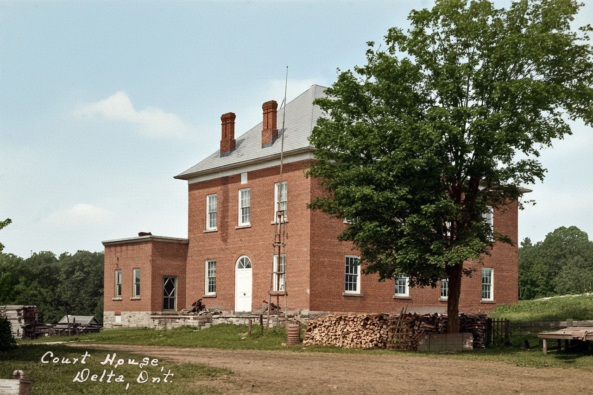
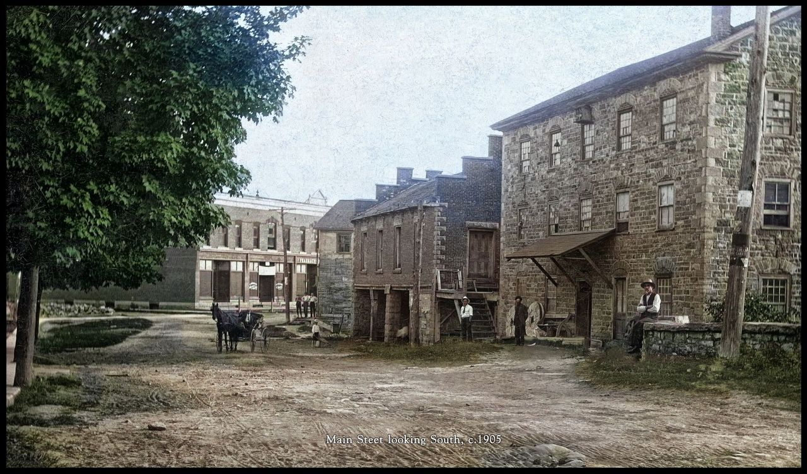
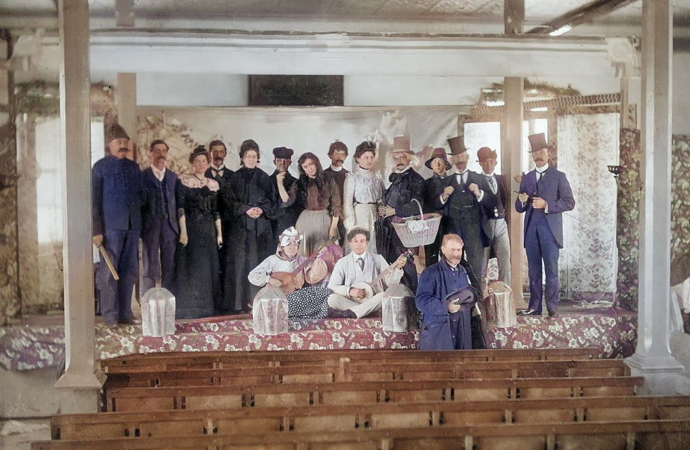
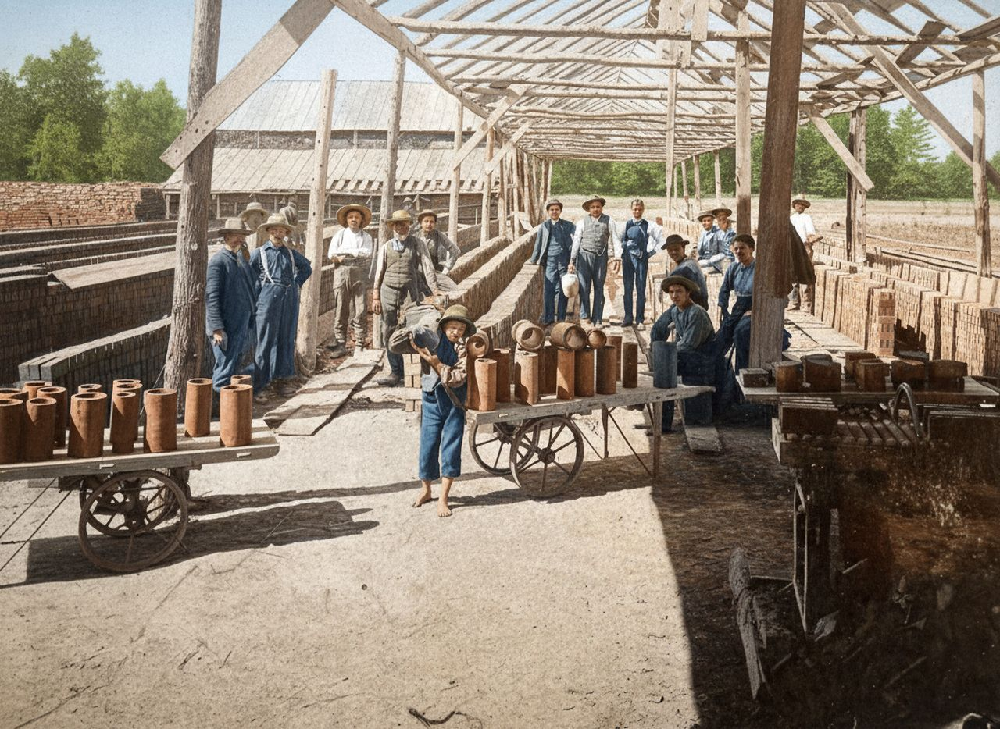
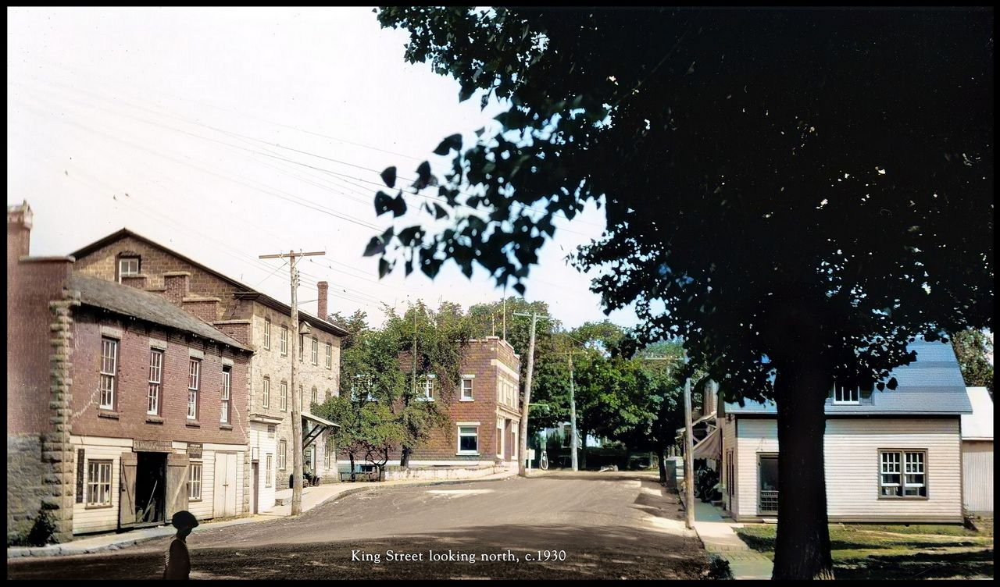
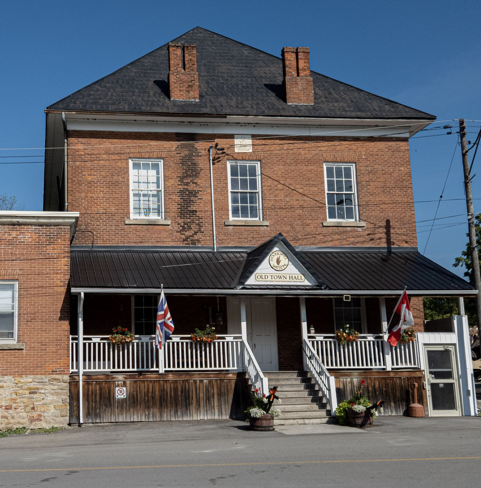
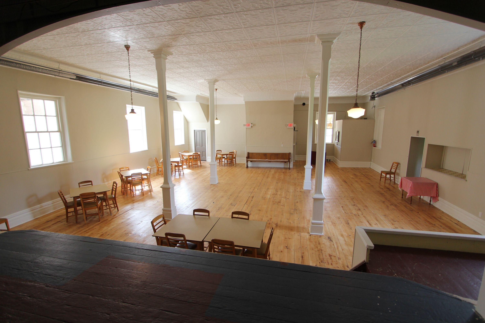
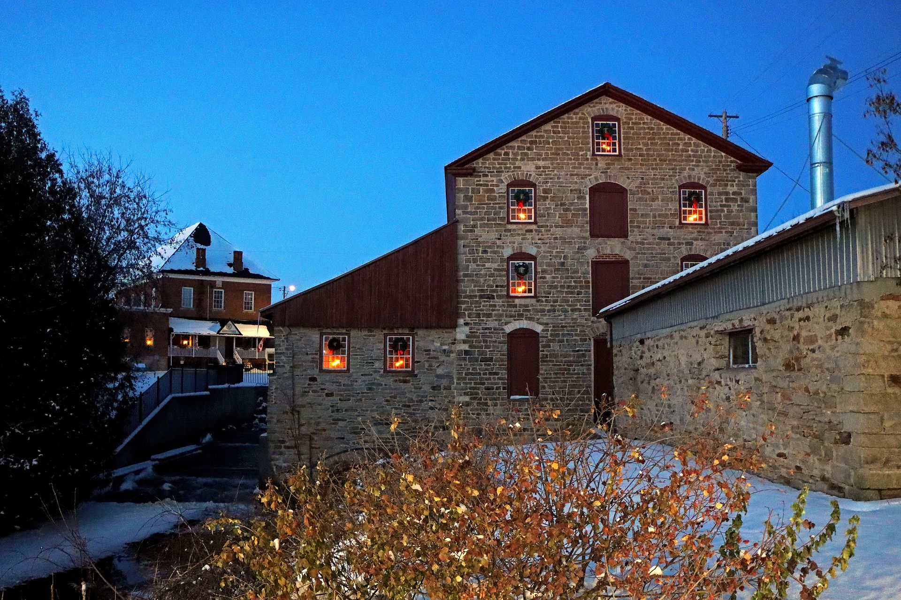

Designated Heritage Property Township of Rideau Lakes · 1879
The Old Town Hall — Delta, Ontario
A HistoryIn Five ChaptersAnd a Timeline
A History of the Old Town Hall
A gathering place, courthouse, theatre, lodge, and symbol of Delta's resilience since 1879 — the second of the village's heritage buildings, held in trust by the Delta Mill Society since 1994.
Built1879 – 80
Acquired1994 · DMS
Restored2012
CustodiansDelta Mill Society

Plate IThe Old Town Hall on King Street, Delta, c. 1910 — symmetrical brick façade, original corniceDMS Historical Archive
More than a building, the Old Town Hall became the heart of Delta's civic and community life — a courthouse and lodge upstairs, a meeting place downstairs, a jail in the basement, and, in time, a stage on which nearly a century and a half of village life has been performed.
What follows is a curated walk through five chapters of the hall's life — its founding, its architecture, the fire that very nearly claimed it, the cat paw prints in its bricks, and its present as a living community house — concluded by a timeline by which the visitor may locate themselves within the long arc of the building.
This is not a definitive history. It is, instead, an exhibition — assembled in the manner of its companion publication on the Old Stone Mill, with which it shares a village, a custodian, and a century of shared community memory.

Plate IIKing Street looking north toward the hall, c. 1905 — wooden boardwalks, horses, and the mill at rightDMS Archive
Chapter One
I.
1879 – 1880 · Founding · Construction
Built for a Growing Village.
Joint ventureTownship & Lodge No. 370
The Old Town Hall was built in 1879–1880 on the site of an earlier stone schoolhouse, raised as a joint venture between the Township of Bastard & South Burgess and Harmony Lodge No. 370, the local Masonic Lodge — one building for two purposes, designed from the outset to serve both the secular and the fraternal life of the village.
It became, almost at once, one of the most important structures in Delta. The second floor was occupied by the Lodge; the ground floor housed the municipal offices, the court offices, and on occasion the courthouse itself. A small jail was set into the basement — a single iron-fitted room whose door, removed long ago, is recalled in oral histories as remarkably heavy for so modest a chamber.
The bricks themselves were the village's own. They were handmade locally by Jasper Russell, whose brickyard once stood near the site of today's post office; the clay was mixed by horse-powered machinery and pressed into wooden moulds by hand, then laid out in long rows to dry under the summer sun before firing.

Plate IIICast of the annual New Year's Day amateur play at the hall — date uncertain, c. early 1900sDMS Archive

Plate IVJasper Russell's brickyard, c. 1900 — where the hall's hand-pressed bricks were madeDMS Archive
Builders
Township & Lodge
Construction
1879 – 80
Building material
Hand-pressed brick
Original use
Civic · Masonic
— Bastard & South Burgess Council Minutes, 1880
The new hall is a credit to the township and an ornament to the village.
Township minute book · April 5, 1880
— 1900s —
Chapter Two
II.
Early 1900s – 1960s · Architecture · Adaptation
A Building That Adapted Through Time.
FormSymmetrical rectangular brick
The original structure was a symmetrical rectangular brick building, reflecting the architectural ideals of the late nineteenth century — restrained, vertical, and unornamented save for a simple cornice and the dressed stone of its sills and lintels. Its proportions, even now, can be read on the standing façade.
In the early years of the twentieth century, a brick side addition was constructed to house expanded municipal offices, and a secure vault was added inside the building to protect the township's growing collection of land records, council minutes, and assessment rolls.
During the 1960s — by which time the hall served as much for community gatherings as for the business of the township — kitchen and washroom facilities were introduced, allowing the building to continue hosting suppers, dances, weddings, and the routine social life of the village.
Despite these changes, the building retained its historic character, and remained central to village life for generations. The principal walls, the roof line, and the proportions of the front elevation are all original; one may stand in the doorway today and look out upon a street much as it appeared in the year the hall was raised.
Plate VThe original brick façade — detail of cornice and upper windowsDMS Survey
Plate VIThe hall's south elevation, showing the later side addition, c. 1905DMS Archive
Footprint
Rectangular · symmetrical
Storeys
Two & basement
Material
Local hand-pressed brick
Additions
1905 · 1960s

Plate VIIKing Street looking north, c. 1930 — the village commercial district at its early-twentieth-century peakDMS Archive
Chapter Three
III.
February 24, 1888 · The Night of the Fire
The Women Who Saved the Hall.
Recorded inContemporary press · 1888
On the evening of February 24, 1888, fire broke out inside the Old Town Hall. Dense smoke quickly filled the building, and without modern firefighting equipment, many feared the structure would be lost.
Citizens rushed to the scene. Men, women, and children formed bucket lines from the nearby creek, passing pails of water hand to hand into the burning building. The work was bitter; the night air at the end of February in Eastern Ontario is unforgiving, and the smoke from the hall's interior, by all accounts, was suffocating.
What follows is reconstructed from the contemporary press, the township minute book of the following March, and the recollections preserved in the Society's oral history collection — presented here in the manner of the gallery from which it is drawn.
Plate VII · 07
Bucket line from the creek to the hall
Plate VIII · 08
The Old Town Hall, morning of February 25, 1888
Plate IX · 09
An original floor joist, scorched on its hidden face
Act One · Exhaustion
As the fire spread, the men began to lose hope.
Bucket after bucket from the creek; the cold of late February in Eastern Ontario; smoke pouring from the second-floor windows. By the small hours of the night, the contemporary record agrees, the crowd's resolve was breaking.
Act Two · Refusal
But the women of Delta refused to surrender the building.
They urged everyone to continue fighting the flames, and doubled their own efforts at the line. Their determination reignited the spirit of the crowd, pushing the community forward until the fire was finally extinguished hours later.
Wall Plaque · No. III
Source
Contemporary press account
Date
February 1888
Subject
The fire at the town hall
Filed
DMS Archive · Box 4 · Folder ii
"
The women exhibited the stuff they were made of.
Quotation · 1888Recorded the morning after the fire, in the village's weekly newspaper — the original sheet preserved in the Society's archive.DMS Archive
Though the interior was badly damaged, the walls and the roof survived. The community returned, in the weeks that followed, to refit the rooms — re-plastering, replacing floor boards, rehanging doors — without ever fully removing the older, blackened wood beneath.
Today, hidden charred timber under the floors and inside the walls still quietly tells the story of that fire — and of the women whose persistence saved the Old Town Hall for future generations.
— Paws —
Chapter Four
IV.
1879 · A Small Accident, Preserved
Paws Frozen in Time.
LocationFront & side door bricks
Near the front and side doors of the Old Town Hall, careful visitors can still find cat paw prints impressed into the original bricks. When the bricks were laid out to dry in 1879, a cat — long since unnamed and unrecorded — wandered across them, leaving permanent marks that remain visible nearly a hundred and fifty years later.
The bricks were handmade at Jasper Russell's nearby brickyard, using clay mixed by horse-powered machinery before being pressed into wooden moulds by hand. They were then laid out in long, low rows under the open sky, soft enough — for several hours each summer afternoon — to take the print of anything that walked across them.
These small accidental details remain one of the building's most human, and animal, connections to the people of nineteenth-century Delta — a reminder that the village's heritage is not only what was intended, but what was inadvertent.
Specimen Drawer · Cabinet IV
Three prints & a mould
DMS Object Coll.
X.Front-door paw print

XI.Side-door paw print
XII.Third, partial, sill
XIII.Brickmaker's mould
How the brick was made · Jasper Russell's yard · 1879
i.
Clay mixed
Local clay turned and tempered by horse-powered machinery on the brickyard floor.
ii.
Pressed by hand
The clay was pressed into wooden moulds, struck off level, and turned out on the drying ground.
iii.
Laid out to dry
Soft for hours each afternoon — long enough for a cat to walk across, and leave its mark.
iv.
Fired & laid
Wood-fired in the yard's small kiln, then carted to the building site and laid into the walls of the new hall.
— 1994 —
Chapter Five
V.
1979 – Present · Restoration · Renewal
From Town Hall to Community Heart.
AcquiredDelta Mill Society, 1994
In 1979, the municipality and the Masonic Lodge vacated the building. For a century, the hall had been continuously occupied by one or both of its founding tenants; their departure left it briefly, but pointedly, without a custodian.
Years later, in 1994, the Delta Mill Society purchased the Old Town Hall and began preserving it as part of Delta's heritage — adding it to the Society's care alongside the Old Stone Mill and the Blacksmith Shop. The hall later served as a museum during restoration work on the mill, exhibiting the artefacts and photographs that could not yet be returned to the limestone building down the street.
In 2012, major restoration efforts returned the hall to its historic appearance while improving accessibility and community use — a careful balance of conservation and adaptation, in keeping with the building's century-and-a-half-long habit of accommodating new purposes within an unchanged frame.
Today, the Old Town Hall continues to host gatherings, performances, celebrations, exhibitions, and events — carrying forward more than a century of shared community memory under the same roof, and beside the same brickwork, with which it began.
Living Heritage
A working community house
Restored in 2012 to its historic appearance, the hall is in continuous use today as a public gathering space — by the Society, the township, and the residents of the Village of Delta.

Performances
Concerts & small halls
Host to the Festival of Small Halls and to seasonal recitals, lectures, and community theatre — programming the township has supported continuously since the 1990s.
Harvest Festival
The Delta Harvest Festival
Each September the hall anchors the Delta Harvest Festival, drawing visitors from across Eastern Ontario to a weekend of milling, blacksmithing, and community in the village's heritage precinct.
147
Years standing
32
Years in DMS care
2012
Last major restoration
∞
Events & gatherings hosted
Chapter Six
VI.
1879 – 2026 · A Historical Timeline
A Historical Timeline.
One hundredAnd forty-seven years
1879
Construction begins
Township of Bastard & South Burgess and Harmony Lodge No. 370 jointly raise the new town hall on the site of an earlier stone schoolhouse. Bricks are pressed at Jasper Russell's yard nearby.
1880
The hall opens
Two storeys of hand-pressed brick — municipal offices, court, and a small basement jail below; Harmony Lodge above. The hall is in continuous public use from this year forward.
1888
The fire — and the women who fought it
On the evening of February 24, fire breaks out in the interior. Bucket lines from the creek extinguish the blaze after hours of effort; the women of Delta are credited with reigniting the community's resolve. Walls and roof survive.
c. 1905
Side addition & vault
A brick side addition is constructed to house expanded municipal offices; a secure vault is added inside for the township's records.
1960s
Kitchen & washroom installed
Modern facilities are introduced to permit the building's continued use as a community gathering space.
1979
Municipality and lodge vacate
The township and Harmony Lodge depart the building after a century of continuous occupancy.
1994
Delta Mill Society purchase
The Society acquires the Old Town Hall and begins preserving it as part of Delta's heritage, alongside the Old Stone Mill and the Blacksmith Shop.
2000s
Museum during mill restoration
The hall serves as the village's museum while the Society undertakes the long restoration of the Old Stone Mill.
2012
Major restoration
Heritage-grade work returns the hall to its historic appearance while improving accessibility and community use.
2026
One hundred and forty-seven years
The hall stands at the centre of the village still — host to performances, exhibitions, and the Delta Harvest Festival each September.
The Delta Mill Society is a non-profit volunteer organisation founded in 1963 and formally incorporated in 1972. Its mandate is the preservation and interpretation of the Old Stone Mill and its companion heritage buildings — the Old Town Hall and the historic Blacksmith Shop — for the benefit of present and future generations.
The Society acquired the Old Town Hall in 1994 and has maintained it continuously since. Members and volunteers steward the building, organise its public programme, and conduct the restoration and conservation work that has now extended across more than thirty years.
Since its founding the Society has invested more than two million dollars in restoration and conservation across all three of its heritage buildings, drawn from donations, fundraising, and the labour of more than a thousand volunteers across six decades.
Incorporated
1972
Hall acquired
1994
Hall restored
2012
Online archive
deltamill.org
Coda · The Last Room
Still Standing.

Plate XVII · Fin.The Old Town Hall beside the Old Stone Mill — two heritage buildings, one village
For nearly a century and a half, the Old Town Hall has witnessed the story of Delta unfold — from court proceedings and community dances to fires, restorations, and celebrations.
It survives not only because it was built well, but because generations of people chose to protect it.
The hall remains a living symbol of Delta's resilience, memory, and community spirit.
Delta Mill Society · Est. 1963 · MMXXVI
More Information
Our website, www.deltamill.org, holds a full history of the mill, current opening hours, and the Society's archive. Donations are always welcome.
The Delta Mill SocietyP.O. Box 172 · Delta, ON · K0E 1G0info@deltamill.org